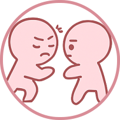
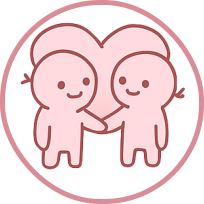
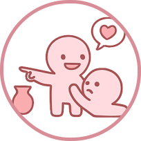
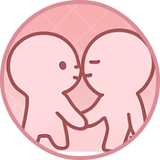
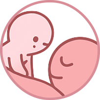
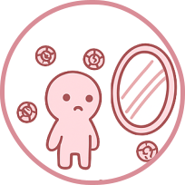
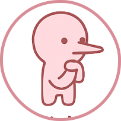
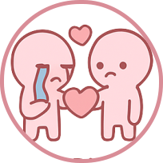

Avoiding serious conversations, giving the silent treatment, or refusing to explain feelings can create confusion and resentment. Healthy relationships require open and honest dialogue. When communication is consistently shut down, problems tend to grow instead of being resolved.

Disrespecting boundaries
Ignoring someone’s limits, whether emotional, physical, or personal, shows a lack of respect. Boundaries exist to make both people feel safe and comfortable. Repeatedly crossing them can damage trust and emotional security.

Excessive Jealousy
Feeling jealous occasionally is normal, but constant suspicion and accusations are not. Excessive jealousy can lead to controlling behavior and unnecessary conflict. Trust is essential for a relationship to remain healthy and stable.

Possessive & Controlling Behavior
Trying to dictate who someone talks to, what they wear, or how they spend their time is a major warning sign. A relationship should allow both individuals to maintain their independence. Control often stems from insecurity and can become emotionally harmful.

Lack of Accountability
Refusing to admit mistakes and always blaming others prevents growth. Taking responsibility is necessary for resolving conflicts. Without accountability, the same problems will continue to repeat.

Inconsistent Effort
Putting in effort only when it is convenient shows a lack of commitment. Healthy relationships require mutual consistency and care. One-sided effort can leave the other person feeling unappreciated or neglected.

Gaslighting
Gaslighting happens when someone manipulates another person into doubting their feelings or memories. This behavior can damage self-confidence and emotional well-being. A healthy partner validates feelings instead of dismissing or twisting them.

Frequent Dishonesty
Small lies can quickly turn into bigger issues. Honesty builds trust, which is the foundation of any strong relationship. When dishonesty becomes a pattern, it becomes difficult to feel secure.

Lack of Empathy
Ignoring or minimizing a partner’s feelings shows emotional immaturity. Empathy allows people to understand and support one another. Without it, emotional connection weakens over time.